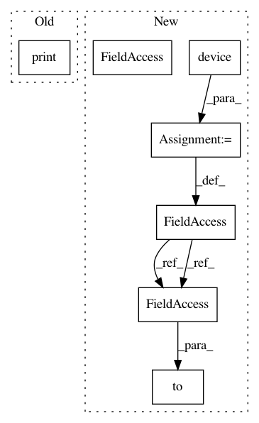

631d4ee2ece28da70d6e22201129f39b4f1dc586,examples/tgn.py,,,#,4
Before Change
train_data, val_data, test_data = data.train_val_test_split(
val_ratio=0.15, test_ratio=0.15)
print(train_data)
print(val_data)
print(test_data)
After Change
from torch_geometric.nn.models.tgn import (IdentityMessage, LastAggregator,
IdentityEmbedding)
device = torch.device("cuda" if torch.cuda.is_available() else "cpu")
path = osp.join(osp.dirname(osp.realpath(__file__)), "..", "data", "JODIE")
dataset = JODIEDataset(path, name="wikipedia")
data = dataset[0].to(device)
train_data, val_data, test_data = data.train_val_test_split(
val_ratio=0.15, test_ratio=0.15)
model = TGN(
In pattern: SUPERPATTERN
Frequency: 3
Non-data size: 7
Instances
Project Name: rusty1s/pytorch_geometric
Commit Name: 631d4ee2ece28da70d6e22201129f39b4f1dc586
Time: 2020-10-26
Author: matthias.fey@tu-dortmund.de
File Name: examples/tgn.py
Class Name:
Method Name:
Project Name: r9y9/wavenet_vocoder
Commit Name: 0a8e27413d721bf8d753e5e6061cc24f5bf6474f
Time: 2018-05-04
Author: zryuichi@gmail.com
File Name: train.py
Class Name:
Method Name:
Project Name: rusty1s/pytorch_geometric
Commit Name: 631d4ee2ece28da70d6e22201129f39b4f1dc586
Time: 2020-10-26
Author: matthias.fey@tu-dortmund.de
File Name: examples/tgn.py
Class Name:
Method Name:
Project Name: rusty1s/pytorch_geometric
Commit Name: 04ad358395c7bd074ffb9af235ccb76d2c0dc4cc
Time: 2020-07-01
Author: matthias.fey@tu-dortmund.de
File Name: examples/pna.py
Class Name:
Method Name: